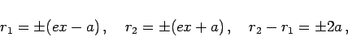

Inhalt Index DeskTop Bronstein

 Geometrie Vektoralgebra und analytische Geometrie Analytische Geometrie der Ebene Hyperbel
Geometrie Vektoralgebra und analytische Geometrie Analytische Geometrie der Ebene Hyperbel


Die Hyperbel ist der geometrische Ort aller Punkte, für die die Differenz der Abstände von zwei gegebenen festen Punkten, den Brennpunkten, konstant gleich 2a ist. Punkte mit r1 - r2 = 2a gehören einem Zweig an (in der Abbildung dem linken), andere mit r2 - r1 = 2a dem zweiten (in der Abbildung dem rechten). Jeder dieser Abstände, die auch Brennpunktradien genannt werden, berechnet sich aus
|  | (3.353) |
wobei das obere Vorzeichen für den rechten, das untere für den linken Zweig gilt. In diesen und den folgenden Hyperbelformeln, mit kartesischen Koordinaten, wird angenommen, daß die Hyperbel in der Normalform angegeben ist.